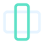
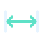
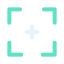
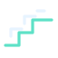

Overlay Library
Transparent Pictograms, Callouts, And Motion Cues For Social Edits.
Using The SVGs
Choose An Overlay To Preview It And Save Its SVG. Import Static SVGs Into An Editor With Vector Support. For Live Motion, Use A Browser Layer That Supports CSS Animation Inside SVGs.
Scale The Square Artboard To Fit Your Frame. To Recolor A Copy, Change The Stroke And Fill Values In The SVG. The Animated Files Honor Your Device’s Reduced Motion Setting.
Open The Asset Catalog54 Overlays
Split Clip
Ripple Delete
Track Stack
Cutaway
Loop Region
Keyframe Pair



Vertical Crop Clip Handle Voice Track Room Tone Stereo Balance Crossfade Peak Meter Beat Marker Headphone Check Music Bed Captions Safe Margins Lower Third Word Highlight Text Baseline Speaker Label Transcript Match Headline Card Pointer Click Touch Gesture



Slider Control Feature Zoom Screen Share Keyboard Shortcut Version History Settings Dial Comment Thread Save Bookmark Share Link Community Group Pinned Reply Audience Retention Notification Bell Profile Badge Elbow Arrow Curved Return



Measurement Span

Detail Bracket Waypoint Route Spotlight Beam



Step Ladder Anchor Pin Tap Ripple



Focus Lock Beat Bars Path Trace Word Underline Swipe Cue


No Overlays Match These Filters.